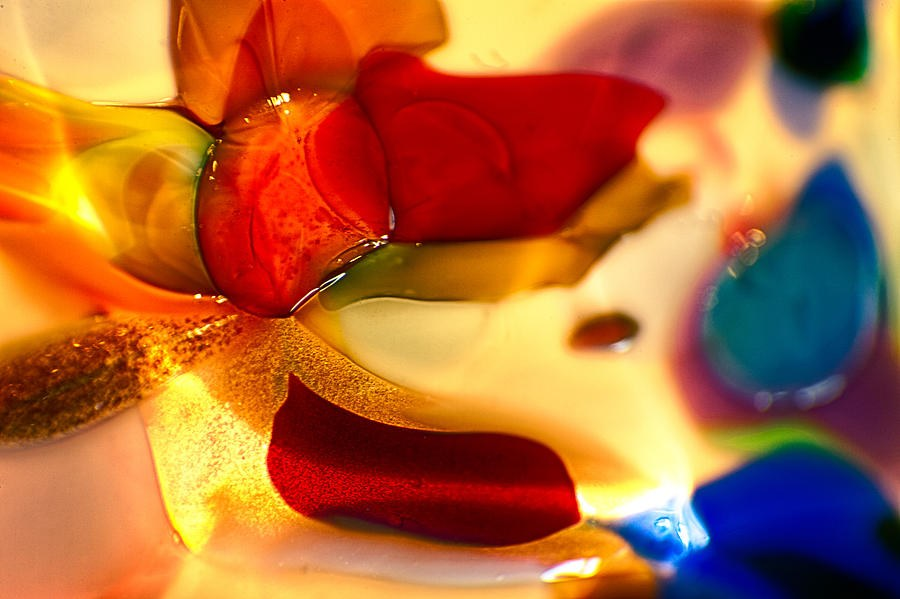

The Library · Omaste Witkowski
The Red Glass That Looks Lit From Behind
Ember Glow is a close-up abstract of glossy, translucent red and amber shapes that melt into cream-yellow, with teal and cobalt along the edge.

Choose your size, paper, canvas, metal or frame. Printed, shipped and guaranteed by Fine Art America.
Look at the upper center first. A red glass shape sits there with a crisp, wet-looking edge, a speckled interior and a few tiny bubbles. It looks lit from behind, and the colour seems to glow from inside it.
Everything around it softens. Amber, burgundy and cobalt drift past in slow bands and fall away into pale cream-yellow. The sharp red form holds your eye while the rest of the image dissolves.
Choose Your PrintMade to order by Fine Art America · 30-day money-back guarantee
What the eye finds, a little at a time
I'll let the image tell its own story. The first thing you see is the glow. Warm light seems to pass through the red and amber shapes, and bright highlights sit on the wet-looking edges and the small bubbles.
Then you see the movement. Swirled bands at left and rounded blobs at right drift diagonally from upper left to lower right. It's slow and molten, like colour that hasn't finished settling.
Then the small details. A fine golden speckle shows at lower left, and a dark crimson slab sits low in the center, below the red glass. Cool teal and cobalt shapes gather along the right edge. The glow stays warm because the blues are only there to balance it.
What you'll see in this piece
- A glowing red glass form at upper center. It gives your eye one sharp place to land, and the image feels alive.
- Warm transmitted light with bright highlights on wet-looking edges and bubbles. The surface looks glossy and liquid.
- Saturated red, orange and amber against pale cream-yellow. The colour is rich without becoming heavy.
- Teal and deep cobalt along the right edge, with burgundy and soft violet nearby. The cool notes balance the warmth and add depth.
- A fine golden speckle at lower left against smooth gloss. The contrast rewards a closer look.
- Soft blur at the corners and background. The sharp jewel-like detail stands out against it.
Where it belongs
The frame is horizontal and filled edge to edge with colour, so it suits wide wall spaces such as above a sofa, console, bed or desk, or in an entry or dining area. The saturated red and amber would stand out on a neutral or cream wall and become the room's focal colour.
The mood is warm, vivid and playful. It's colour for its own sake, and that is reason enough to hang it.
- This is for you if you want a warm, saturated statement piece rather than a cool or symmetrical glass abstract.
- This is for you if you like one clear focal point with soft, dissolving space around it.
- This is for you if you want red, orange and amber balanced by teal and cobalt.
- This is for you if your wall is neutral or cream and needs one strong colour.
Choose your print on Fine Art America
- Ember Glow, Translucent Red Glass Abstract, by Omaste Witkowski, on its Fine Art America listing.
- Your choice of size, paper, canvas, metal or frame, so you can match it to your wall.
- Made to order by Fine Art America and shipped from their facility, typically within a few business days.
- A 30-day money-back guarantee from Fine Art America.
- One click on the listing to see the options and choose your print.
Choose Your PrintMade to order by Fine Art America · 30-day money-back guarantee
Questions before you choose
Will the colours look as vivid in person as they do on screen?
Screens, papers and finishes all affect how colour looks, so I can't promise an exact match. The piece is built on saturated red, amber and cobalt, and the 30-day money-back guarantee covers you if the print isn't right for your space.
Which size should I choose?
The listing shows the sizes and materials available. The format is horizontal, so it suits a wide wall. The single sharp focal point and soft blurred edges are the things to picture at your scale.
What if it doesn't suit my wall once it arrives?
Fine Art America offers a 30-day money-back guarantee. You can try the piece in your room and decide there.
Picture a neutral wall with this across it: the red glass glowing at upper center, amber and cobalt drifting slowly past it, and the cream-yellow background lighting the whole room.
If that's the colour you want in the room, go to the listing and choose your print.
Choose Your PrintMade to order by Fine Art America · 30-day money-back guarantee
Find your own piece with the art adventure · Ask the gallery what fits your wall